Searching and mining trillions of time series subsequences under dynamic time warping– Rakthanmanon et al. SIGKDD 2012
在这篇论文中，作者主要是针对DTW算法提出一系列的优化策略。本论文提出的UCR-DTW模型可以在低配设备上实时地使用DTW算法在大规模数据集上进行高效的时间序列相似性搜索而无需对时间序列建立索引。
DTW(Dynamic Time Warping)及已知的优化策略
计算两个时间序列 Q和C之间的相似度，常用的度量方法是欧式距离(ED)，计算公式如下图(1-1)所示：
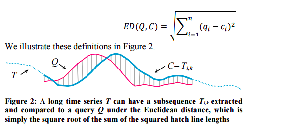
从上图可以看到欧式距离的局限性：欧式距离通过建立两个序列之间的一一对应关系，使得Q和C之间的波峰没有对齐，因此计算得到的序列相似度存在较大的偏差。DTW 算法则可以很好的解决这个问题。
大部分情况下，两个序列整体上具有非常相似的形状，但是这些形状在时间轴上并不是对齐的。所以在计算两个序列的相似度之前，需要将其中一个(或者两个)序列在时间轴上进行warping，使得两个序列波峰更好的对齐。
DTW就是实现这种warping的一种有效方法。换句话说，DTW算法通过找到两个序列之间的另外一种非一一对应的映射关系，这个映射关系也称为warping path。以上面的Q,C为例，得到的对应关系如下图(1-2)中的灰色线段所示:
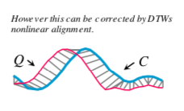
DTW算法的求解过程的直观理解为构建一个nxn的矩阵(此处假设Q和C的时间序列长度都为n，矩阵中的元素(i,j)表示序列Q的时间点 和序列C的时间点之间的欧式距离）目标是在矩阵中找到一条从(0,0)到(n,n)的路径，使得路径上的所有元素之和最小。如下图(1-3)所示，红色标识的路径即为warping path：
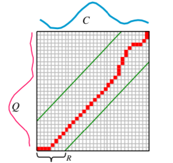
图(1-2)和图(1-3)是等价的，都是表示了Q和C之间的映射关系。
欧式距离相当于DTW的特例，对应的warping path为从矩阵左下角到右上角的对角线。
目前已知的DTW顺序搜索的四种优化方法如下:
去掉平方根计算
通过使用lower bounds来剪枝，因为lower bounds的计算时间复杂度都小于DTW的时间复杂度。比如：
LB_{\textrm{Kim}}FL$$的时间复杂度为O(1)
本文在实现时，由于对时间序列进行标准化后，时间序列数据中的最大和最小值对于整个lower bound距离贡献较小，因此，去掉原来LB_kim算法(时间复杂度为O(n))中提取的四个特征点中的最大值和最小值，使得时间复杂度降为O(1)。但是，实现中为了使此策略发挥最大作用，作者还提取了第2,3和倒数第2,3个时间点，来进行级联剪枝。(详情参考算法实现lb_kim_hierarchy方法)
的时间复杂度为O(n)
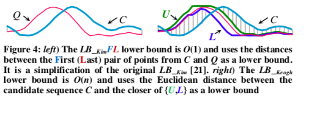
Early Abandoning of ED and
基于这条优化策略，作者提出的Reorder early abandoning可以进一步降低计算成本。
即在计算ED或者的时候，如果当前的两个序列的时间点(1,k)(注：k<=|Q|)之间的差值平方之和，大于当前两个序列最小距离值best-so-far，那么可以提前结束Q和C是否相似的判断。计算过程如下图(1-4)所示：
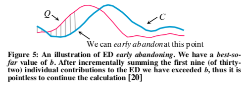
Early Abandoning of DTW
计算完整的的值，仍然需要计算完整的DTW的值，我们可以通过利用部分的 的值来减少DTW的计算量。
比如，先从左到右计算时间点[1,k]的DTW值，然后在时间点[k+1,n]，复用前面计算好的 值。最终得到的距离值依然为完整的DTW值的lower bound。这样的话，我们就可以使用stop early策略，每计算当前时间点的DTW值，就可以复用前面计算好的来获得整个子序列的lower bound值。
通过比较这个lower bound和当前最小距离值best-so-far进行比较，如果当前的lower bound值大于best-so-far，那么可以提前结束DTW的计算。这种方式的直观表示如下图(1-5)：
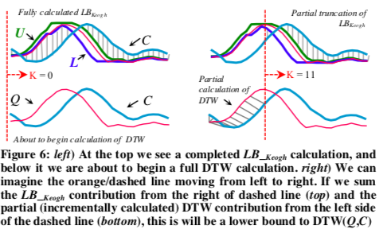
以上，介绍完了前人对DTW的四种优化方案。
还有一种已知的提升DTW的计算速度的策略即使用多核计算资源。
UCR Suite 的优化策略
相关概念及定义
定义1:时间序列T是一个有序列表：。然而源数据是一个很长的时间序列，我们最终需要把它与一个更短的子序列进行相似度比较。
定义2: 子序列是时间序列T中的一个子序列，它起始于，长度为k，即。。
这里，我们把记为C，作为与query Q比较相似的候选子序列。令Q的长度为|Q|=n。
定义3:Q和C之间的欧式距离(|Q|=|C|)定义为 (公式1)：
路径P的第t个元素定义为，则我们可以把warping path表示为 (公式2)：
优化策略
Early Abandoning Z-normalization
在计算DTW距离之前都需要对Q和C进行标准化处理，但是对整个数据集进行标准化的复杂度太高了，因此这里使用online Z-normalization，这样的话就可以采用early stop的策略来提前结束normalization的计算。
首先计算序列C的均值和方差的公式如下所示(公式3)：

当使用online Z-normalization的时候，当前遍历到源序列T中的第k个时间点，所计算得到的时间点元素累加和以及时间点元素的平方累加和表示为(公式4)：
那么对于k-m+1 到k之间的这m个时间点对应的均值和方差的计算公式如下所示(公式5)：
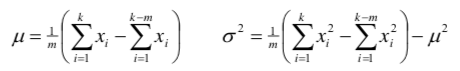
图示详解如下图(1-6) 所示：
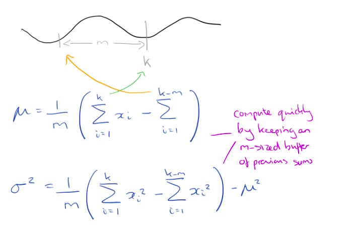
所以，基于online Z-normalization的abandon normalization early策略伪代码如下图(1-7)所示：
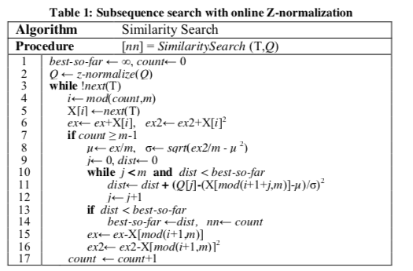
论文中，作者提到此处存在浮点计算误差累加的问题，这里通过每比对完100万子序列，就进行一次完整的Z-normalization，进而消除误差累加的问题。
Reorder early abandoning
前面early abandoning策略的计算方式都是从子序列的第一个时间点开始，自左向右进行计算的。本文提出一种策略是先快速找到Q和C之间差值之和最大的子序列，然后根据它来判断这个子序列是否大于best-so-far值，从而可达到降低计算成本的目的。这两种顺序的计算成本对比如下图(1-8)所示：
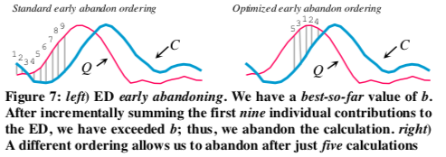
左图表示从左到右的顺序计算差值，它需要计算9个时间步才能判断是否提前结束，而右图找到一个新的计算顺序，这时候只需要计算5个时间步就能判断是否提前结束。
那么，现在的问题就变成了，如何找到这些差值之和最大的子序列？
这里有一个疑问，找到的这些子序列是否是连续的？
本文中的做法是，首先对被Z-normalization 处理过的Q序列所有时间点元素的绝对值进行排序，这样做的理论依据是，在进行DTW获取序列之间的距离时， 可以对应多个序列C中的时间点。进行z-normalization后的C序列服从高斯分布，意味着均值为0，因此，距离均值0最远的对距离值贡献最大，因此对z-normalizated Q序列的绝对值进行排序，从而可以快速差值之和最大的子序列。
作者通过实验证明，使用这样的方式找到计算顺序与真实的最好计算顺序的相关度为0.999。
Reversing the query/data role in
基于Q，使用来进行剪枝，这里只需要对Q计算一次的U和L，从而可以节省很多时间和空间开销；如果全部采用来进行剪枝，基于每一个C，计算U和L，那么会增加很多的计算成本。
因此，策略是可选项，只有当剪枝效果不太理想的时候，可以“just-in-time” 的策略来使用来辅助提高剪枝效率，从而大大降低空间开销。对于的时间开销，可以通过剪枝来降低完整DTW的时间开销来抵消掉。对两种计算策略的直观理解如下图(1-9)所示：
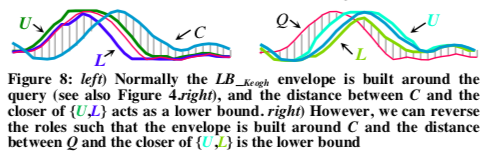
Use cascading lower bounds
目前存在很多种lower bound的计算方式。每一种lower bound都可以用于对DTW进行剪枝而且时间复杂度可估计。截止目前为止，至少有18种lower bound机制，作者把它们都实现了一遍，然后分别在50个不同的数据集上进行测试和对比，得到的结果如下图(1-10)所示：
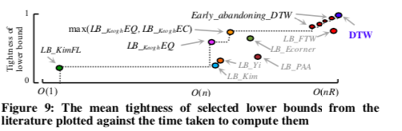
根据以上实验结果，作者通过级联各种lower bound的方式来进行ED和DTW进行剪枝：
首先，使用时间复杂度为O(1) 的，这样可以过滤掉很多的candidate subsequence，
接着，基于Q，使用来进行剪枝，
如果，剪枝效果不太理想的时候，使用来辅助提高剪枝效率，
最后，如果以上的剪枝策略全部失效，则依然可以通过early abandoning 来计算完整DTW
实验证明，上面使用的每一个lower bound策略都能帮助提升DTW的速度，去掉任意一个lower bound策略都会使得搜索速度加倍。在大规模搜索中，以上的剪枝策略可以节省99.9999%的DTW算法的时间开销。
实验结果分析
论文中，针对以下这几种实现方式进行性能的比较分析：
- Naive:每个子序列都是从零开始归一化z的。每一步都使用完整的欧氏距离或DTW。 (大约有2/3的文章是基于这种思想来进行相似度计算的)
- State-of-the-art: 当前最好的模型基于Z-normalization,early abandoning以及使用lower bound来辅助完整DTW计算这些策略来实现的。(大约有1/3的文章基于这种思想来进行相似度计算的)
- UCR Suite
GOd’s ALgorithm (GOAL) 直接基于均值、方差来进行比较计算相似度的，时间复杂度为O(1)
GOAL模型相当于所有解决长度未知无限制的序列搜索问题的最快模型的一个baseline model。
在用于对比实验的4个模型都是使用UCR Suite的代码，模型之间的区别只在于把相应的加速代码注释掉而已。
基于随机生成数据集的实验效果对比
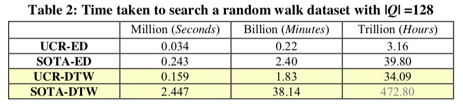
由上图可以看到，对于128长度的query，SOFA和UCR Suite算法集之间的性能差异很大。
不同长度query的实验对比
接下来，看看对于不同长度query，这几种模型的性能对比情况：
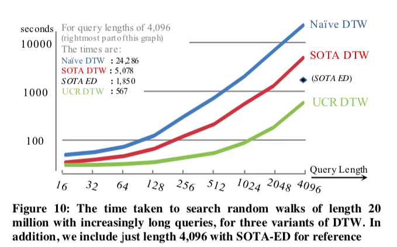
UCR-DTW python实现
UCR-DTW应用了以上所有的优化策略
GitHub:ucr-suite-python
UCR-ED python 实现
UCR-ED 应用的优化策略为：
- Early Abandoning of ED
- Reorder early abandoning
1 | import time |